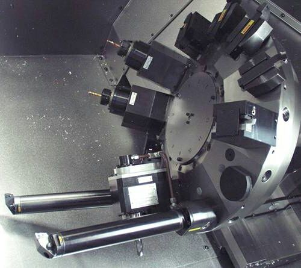
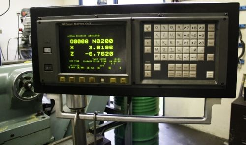
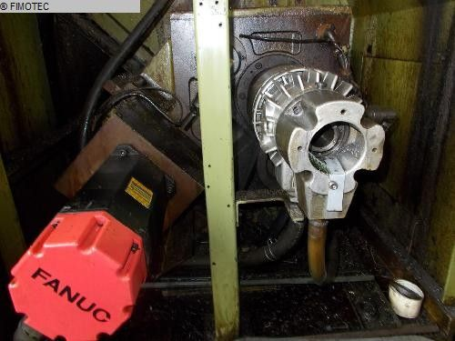

CNC lathe machine parts are very briefly with pictures are described earlier here CNC Lathe Introduction, Main Parts and their Functions
So now it is time to test what you have learned about cnc lathe machine parts, so let’s start
Identify CNC Lathe Machine Parts – 1
Can you identify which cnc lathe machine part is shown in the picture below,

Answer:
This is CNC lathe machine tool turret
CNC tools are mounted on the cnc lathe turret for machining operations, tool are first indexed (in the cutting position) with a part-program command and then cutting with that tool is started.
Identify CNC Lathe Machine Parts – 2
Can you identify cnc machine this part

Answer:
This is CNC machine control panel
CNC part-programs can be added/edited/deleted through cnc machine control panel, cnc machinists control whole the cnc machine operation through the keys on this control panel. CNC control panel have many keys some for axis movements, spindle speed control etc.
Identify CNC Lathe Machine Parts – 3
A little bit difficult to identify, but this is the main part of cnc lathe mahcine, a guess is that most of the noise is generated by this part of the machine.

Answer:
This is CNC lahte machine headstock
Headstock is one of the main parts of cnc lahte machine, consists of Main-motor which drives cnc lath spindle/chcuk, is also have gearbox, lubrication-pump and other such parts.